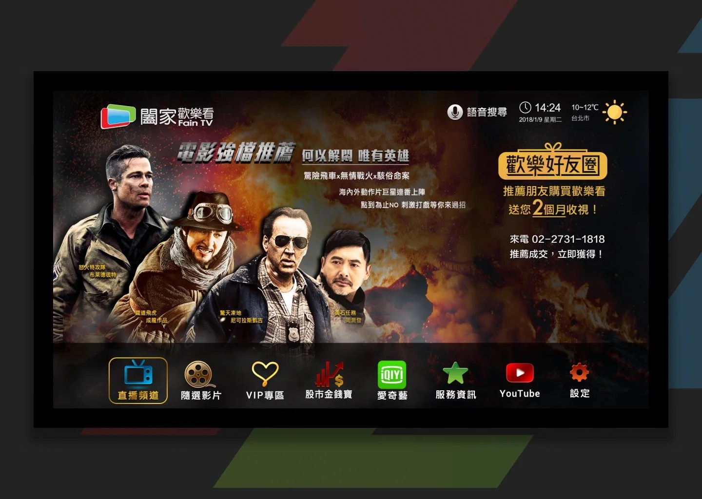
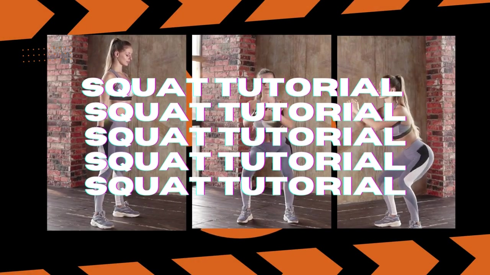

ASUS · Senior Web UX
Yu-Hsien (Rowan) Lin
Cross-screen UI/UX Designer
Bridging platforms, connecting users. 跨裝置、研究與產品體驗。
Cross-device · TV / Mobile / Web · 訂閱體驗
Open presentation →

10 週年翻新 · B2B→B2C · 訪談／問卷／易用性
UX Research · Mixed Methods
Open portfolio ↗
